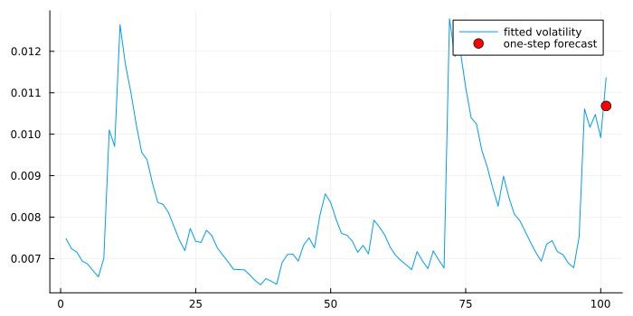
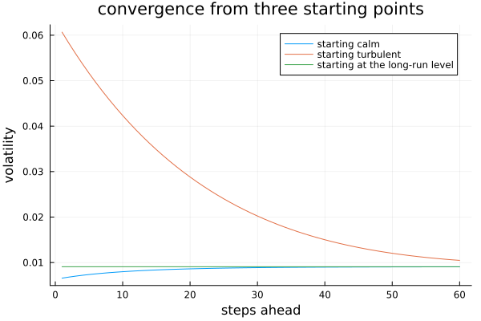
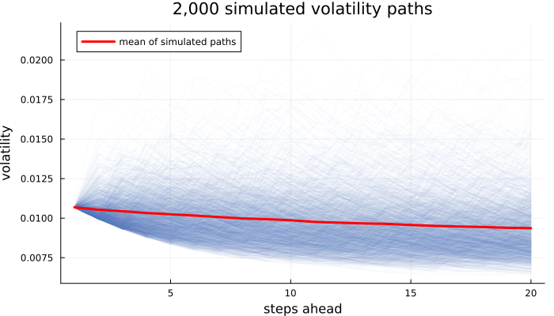
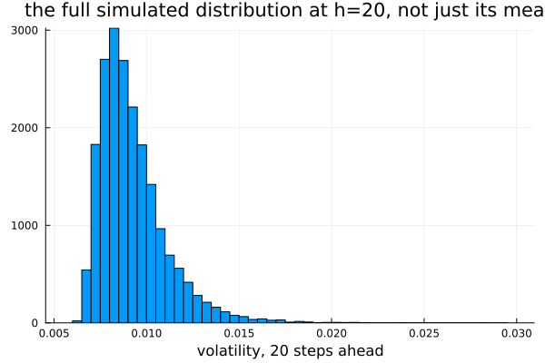

Forecasting Volatility
Chapters 25 and 26 described variance. This chapter projects it forward — and discovers along the way that one of the three models cannot be projected forward analytically at all, which turns out to be a structural fact about the model rather than a gap in this package.
Tomorrow is easy
using TSAnalytics, Plots
d = dataset("nyse")
r = d.value
m = fit_garch(r, 1, 1)
f1 = forecast_volatility(m, 1)
plot(sqrt.(m.sigma2[end-100:end]); label="fitted volatility", size=(700,350))
scatter!([101], [sqrt(f1.variance[1])]; label="one-step forecast", markersize=6, color=:red)
The one-step forecast requires no real work at all. Today's squared shock and today's variance are both already known once the model is fitted, so tomorrow's variance falls straight out of the recursion — there is no uncertainty about the forecast itself, only about which particular shock will actually realise against it. That is why one-step volatility forecasting is close to trivial, and why every genuinely interesting question in this chapter starts at step two.
Further out
h = 60
f_multi = forecast_volatility(m, h; method=:analytic)
long_run = m.omega / (1 - m.alpha[1] - m.beta[1])
half_life = log(0.5) / log(m.alpha[1] + m.beta[1])
plot(sqrt.(f_multi.variance); label="forecast", size=(700,350))
hline!([sqrt(long_run)]; label="long-run volatility", linestyle=:dash, color=:red,
xlabel="steps ahead", ylabel="volatility", title="multi-step GARCH(1,1) forecast")
println("long-run variance: ", round(long_run, digits=6), " long-run volatility: ", round(sqrt(long_run), digits=4))
println("half-life of a shock: ", round(half_life, digits=1), " trading days")long-run variance: 8.2e-5 long-run volatility: 0.0091
half-life of a shock: 8.4 trading daysThe forecast converges toward the unconditional (long-run) variance, ω / (1 − α − β) — from below if current volatility happens to be calm, from above if it is turbulent. The rate of convergence is set entirely by α + β, which Chapter 25 found to be about 0.92 for this exact fit, giving a half-life of roughly 8.4 trading days: noticeably persistent, though a shock still fades within a couple of trading weeks rather than lingering for months.
function garch_forward(omega, alpha, beta, sigma2_0, hh)
s = zeros(hh); prev = sigma2_0
for i in 1:hh; prev = omega + (alpha+beta)*prev; s[i] = prev; end
return s
end
idx_calm = argmin(m.sigma2)
idx_turb = argmax(m.sigma2)
path_calm = garch_forward(m.omega, m.alpha[1], m.beta[1], m.sigma2[idx_calm], h)
path_turb = garch_forward(m.omega, m.alpha[1], m.beta[1], m.sigma2[idx_turb], h)
path_lr = garch_forward(m.omega, m.alpha[1], m.beta[1], long_run, h)
plot(sqrt.(path_calm); label="starting calm")
plot!(sqrt.(path_turb); label="starting turbulent")
plot!(sqrt.(path_lr); label="starting at the long-run level", xlabel="steps ahead", ylabel="volatility",
title="convergence from three starting points")
All three converge toward the identical long-run level, at the identical rate, from three genuinely different starting heights — the one already sitting at the long-run level simply stays flat, by construction. That is mean reversion in variance, and it is the single most practically useful thing a GARCH model says: a turbulent period will calm down, predictably, and the model gives a real number for roughly how fast.
When the formula runs out
m_e = fit_garch(r, 1, 1; model=:egarch)
try
forecast_volatility(m_e, 5; method=:analytic)
catch err
println("ERROR: ", sprint(showerror, err))
end
f1e = forecast_volatility(m_e, 1; method=:analytic)
println("horizon 1 still works: ", f1e.variance)ERROR: ArgumentError: Analytic forecasts not available for horizon > 1 with model=:egarch (matches arch's own ValueError) -- use method=:simulation or method=:auto
horizon 1 still works: [6.157355411061301e-5]The one-step EGARCH forecast works fine — quoted above is the actual error arch itself raises (ValueError, reproduced here as this package's own ArgumentError) the moment the horizon goes past one. This is not a missing feature waiting to be implemented.
GARCH's recursion is linear in the variance itself, so taking expectations step by step works cleanly: the expectation of a sum is the sum of the expectations, which is exactly the substitution the garch_forward function above performs at every step. EGARCH's recursion is linear in the logarithm of the variance, and the expectation of an exponential is not the exponential of the expectation — Jensen's inequality gets in the way, and no rearrangement of the algebra removes it. The one step that makes GARCH's multi-step forecast easy simply does not exist for EGARCH's equation.
That is structural, not a matter of implementation effort. No amount of further work produces a closed-form EGARCH multi-step forecast, and a library that quietly offered one anyway would be returning an approximation while calling it exact.
This is the fourth time in this book that a well-built implementation has declined to return a number it cannot compute honestly, rather than return a plausible-looking wrong one: Chapter 9's Phillips-Perron ρ variant, Chapter 9's KPSS p-value outside its tabulated range, Chapter 10's Durbin-Watson p-value (which Python's own statsmodels declines to report at all, for exactly this reason), and now this. It is worth naming as a pattern rather than meeting it as a fresh surprise each time — a library that refuses to guess is behaving correctly, not incompletely.
Simulate instead
using Random
Random.seed!(11)
f_sim = forecast_volatility(m, 20; method=:simulation, simulations=2000)
plot(sqrt.(f_sim.variance_paths)'; alpha=0.03, color=:steelblue, label="", size=(700,400))
plot!(sqrt.(f_sim.variance); linewidth=3, color=:red, label="mean of simulated paths",
xlabel="steps ahead", ylabel="volatility", title="2,000 simulated volatility paths")
Draw shocks, run the variance recursion forward one path at a time, repeat many times, average. The mechanism is obvious once stated, and it works for any model whose recursion can be run forward — which is every model built so far, EGARCH included.
f_a5 = forecast_volatility(m, 5; method=:analytic)
Random.seed!(3)
f_s5 = forecast_volatility(m, 5; method=:simulation, simulations=20000)
println("h analytic simulation (20,000 paths)")
for hh in 1:5
println(hh, " ", round(f_a5.variance[hh], digits=8), " ", round(f_s5.variance[hh], digits=8))
end
println("max relative difference: ", round(100*maximum(abs.(f_a5.variance .- f_s5.variance) ./ f_a5.variance), digits=2), "%")h analytic simulation (20,000 paths)
1 0.00011412 0.00011412
2 0.0001116 0.00011148
3 0.00010928 0.00010933
4 0.00010714 0.0001072
5 0.00010518 0.00010533
max relative difference: 0.15%This is the beat's real payload. The two methods agree at h = 1 essentially exactly, and stay within a fraction of a percent of each other out to h = 5. This is how a simulation engine gets validated: run it where the correct answer is already known by another route, confirm the two agree, and only then trust the simulation where no other route exists — the same technique this project has used before, in its own development (confirming a state-space reduction case against a simpler known-correct path) as well as earlier in this book.
using Statistics
Random.seed!(11)
f20 = forecast_volatility(m, 20; method=:simulation, simulations=20000)
paths20 = f20.variance_paths[:, 20]
histogram(sqrt.(paths20); bins=60, legend=false, xlabel="volatility, 20 steps ahead",
title="the full simulated distribution at h=20, not just its mean")
println("mean: ", round(sqrt(mean(paths20)), digits=4))
println("median: ", round(sqrt(median(paths20)), digits=4))
q = quantile(paths20, [0.05, 0.95])
println("5th/95th percentile (variance scale): ", round.(q, digits=6))mean: 0.0094
median: 0.0088
5th/95th percentile (variance scale): [5.1e-5, 0.000161]Simulation gives the whole distribution, not only its average, and the analytic formula has nothing to say about this at all. The mean sits above the median — the upside tail runs much further than the downside, because variance is bounded below by zero and not bounded above. That skew is genuinely useful for risk work (a 95th-percentile volatility scenario is a real, computable number here) and it is completely invisible in a point forecast.
Choosing a method
forecast_volatility(m, 20; method=:analytic) # warm up compilation
forecast_volatility(m, 20; method=:simulation, simulations=100)
t_analytic = @elapsed for _ in 1:100; forecast_volatility(m, 20; method=:analytic); end
println("analytic, per call: ", round(1000*t_analytic/100, digits=4), " ms")
for nsim in (100, 1000, 10000)
t = @elapsed forecast_volatility(m, 20; method=:simulation, simulations=nsim)
println("simulation, ", nsim, " paths: ", round(1000*t, digits=2), " ms")
endanalytic, per call: 0.0016 ms
simulation, 100 paths: 1.38 ms
simulation, 1000 paths: 29.31 ms
simulation, 10000 paths: 155.52 msAnalytic forecasting is essentially free (a fraction of a millisecond); simulation costs roughly in proportion to how many paths are drawn, from a couple of milliseconds at a hundred paths to several hundred at ten thousand. The sensible default follows directly: use the analytic formula wherever it exists and is sufficient, and simulation only where it does not exist or where the full distribution, not just its mean, is actually wanted. This package's own method=:auto does exactly that — it resolves to :analytic for GARCH and GJR and to :simulation for EGARCH, checked directly above, without the caller ever having to know which model was fitted.
Simulating volatility paths is embarrassingly parallel — each path is drawn independently of every other one — and forecast_volatility's own parallel=true default threads across paths for exactly that reason. The one thing that needs care under threading is the random number generator: naively sharing one global RNG across threads either serialises the threads on a lock or, worse, produces results that depend on however the operating system happened to schedule them that run, which silently breaks reproducibility. Each thread needs its own independent stream, seeded deterministically from the run's own seed rather than from thread-scheduling order, for the same simulated call to give the same answer twice.
Mean reversion in variance has a direct, practical use for Indian markets. NSE volatility spikes around Union Budget announcements, election results and monetary policy decisions — largely scheduled events with known dates fixed well in advance.
A GARCH forecast made the day before such an event will not anticipate the spike at all — the model has no calendar and no notion that Thursday is a policy day, only the variance history it has already seen. It will, however, correctly predict the decay afterwards, and this chapter's half-life gives a real number for roughly how long the elevated volatility should be expected to persist. Anticipating the spike itself, rather than only its aftermath, needs an exogenous regressor built from the calendar — the same answer Chapter 36 gives for festivals.
Where this leaves you
You can forecast a variance forward — by formula where a formula exists, by simulation where it does not — and you know how to check that the simulation is telling the truth before trusting it anywhere the formula cannot reach. Everything in Parts IV and V so far has estimated volatility indirectly, from daily returns. Where intraday data is available, volatility can instead be measured rather than modelled, which is a different approach entirely, with different strengths. Chapter 28 closes Part V there.